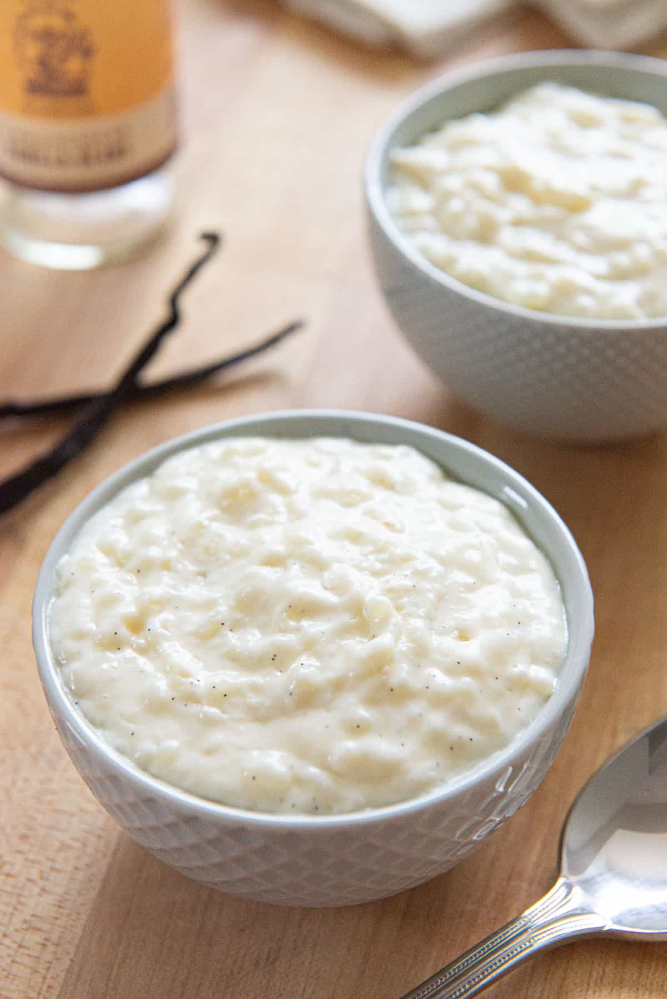
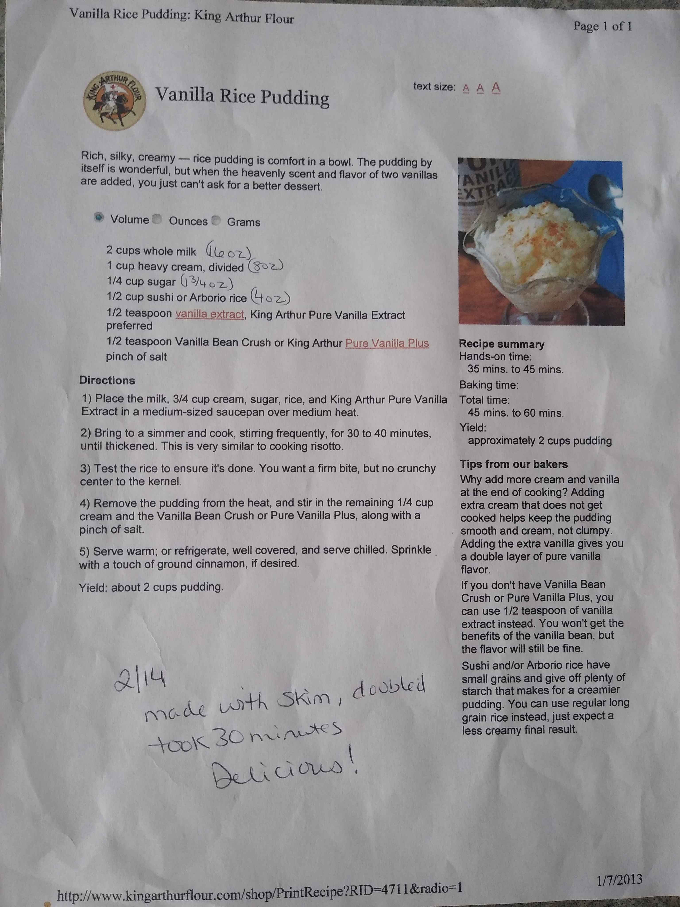

Rice Pudding

What is It???
My mother-in-law makes this recipe and wow it's good. It's rice, but sweet and creamy. Amazing.
Ingredients
- 2 cups whole milk (16 oz)
- 1 cup heavy cream (8 oz)
- 1/4 cup sugar (1.75 oz)
- 1/2 cup sushi or Arborio rice (4 oz) Long grain white rice can also be used, but the texture may be slightly less creamy.
- 1 teaspoon vanilla extract
- pinch of salt
Instructions
- Place the milk, 3/4 cup cream, sugar, rice, and 1/2 teaspoon vanilla extract in a medium-sized saucepan over medium heat. Can also be made with a larger slow cooker, depending on if the recipe is doubled or more.
- Bring to a simmer and cook, stirring frequently for 30-40 minutes, until thickened. This is very similar to cooking risotto. If using a slow cooker, set to high heat and stay nearby to stir frequently. Scrape the bottom to ensure nothing is sticking.
- Test the rice to ensure it's done. You want a firm bite, but no crunchy center to the kernel.
- Remove the pudding from the heat and stir in the remaining 1/4 cup cream, 1/2 teaspoon vanilla extract, and a pinch of salt.
- Serve warm or chilled. Sprinkle ground cinnamon on top if desired.
Yield: about 2 cups pudding.
My mother-in-law's recipe:
